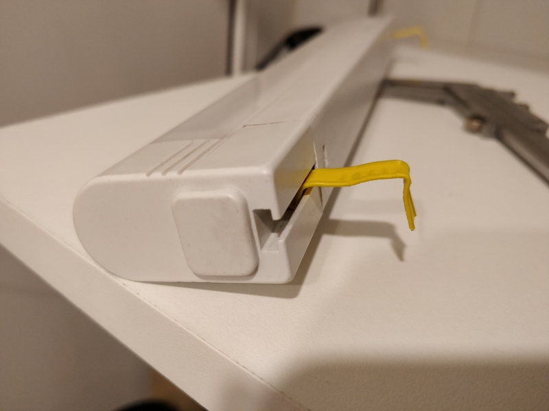

Очистка старых смерженных веток в удалённом git репозитории
Не так давно по работе я столкнулся с задачей - необходимо было очистить большой репозиторий на гитхабе от всех веток, которые были полностью смержены в мастер, позднее, чем N дней. Для этого пришлось написать небольшой скрипт, который я просто оставлю ниже.
Теги: админское, shell, automatization
О деградации кино и коротких рассказах

Не знаю, как у вас, а у меня довольно часто бывает такое состояние, когда хочется выпасть из окружающего тебя мира хотя бы на 10 минут, очутиться в другой реальности, забыть про дела и работу - одним словом, сбежать от всего, что окружает. И что удивительно, художественная литература в этом отношении лично на меня в последнее время оказывает куда больший эффект, нежели видеоряд. Не знаю, почему так. Может быть мы уже избалованы спецэффектами после разнообразных "Аватаров" и "Властелинов колец". Может быть за последнее время слишком часто за спецэффектами стали прятать отсутствие смысла, банальность сюжета или логические несостыковки. А возможно, моя фантазия устала от бездействия и хочет сама создавать какие-то образы. Одним словом, какое кино или сериал я ни начинаю в последнее время смотреть, мне не нравится. И то, что идёт в прокате в кино мне тоже не нравится. Пересматривать уже просмотренное я не люблю так же как и перечитывать уже прочитанное, разве что уж совсем что-то напрочь забытое.
Теги: кино, книги, подкасты, мысли-вслух
О деталях и памяти
Это репост от 27 мая 2008 г. 17:54
Интересно, оказывается, в жизни бывают такие моменты, когда детали какого-то события оказываются важнее для тебя, чем само это событие. Но редко когда детали самой жизни оказываются ценны. Ан нет, получается, что и такое тоже может быть.
Когда-то, я вёл дневник. И обычно я записывал туда не какие-то события, которые происходили в моей жизни, а именно мелкие и незначительные её детали, которые ни для кого кроме меня не представляли никакого интереса. И как ни странно, эти детали помогают вернуться в прошлое лучше любой машины времени.
Теги: ностальгия, старое, мысли-вслух
Об информационной безопасности и сроке годности

Прогресс
Скорость прогресса непостоянна. Если взять скажем, разницу в образе жизни людей 13го века и образе жизни людей 17го века, то разница конечно же будет, но она ни в какое сравнение не идёт между разницей между 17-м и 19-м веками. И даже эта разница меркнет по сравнению с тем разрывом в прогрессе, который произошёл между 19м веком и настоящим временем. Развитие нелинейно, оно экспоненциально. Чем больше у нас знаний и возможности их применения, тем больше это даёт новых и новых знаний и возможностей их применения.
Наша среда изменяется, появляются новые вещи, новые понятия и новые возможности, о которых и не мечтали фантасты в 19-м веке. Жюль Верн ничего не написал про появление в будущем интернета, но он был бы наверное в шоке, если бы узнал, что сейчас мы можем достать из кармана небольшой прямоугольничек и получить доступ практически ко всем знаниям и всему опыту, накопленному человечеством за всё время. И он скорее всего впал бы в депрессию, если бы узнал, что бОльшая часть человечества пользуется этой возможностью преимущественно для того, чтобы лицезреть изображения котиков или выкладывать изображения себя на всеобщее обозрение.
Теги: мысли-вслух
Окна в окне - про эволюцию виртуализации

Как гласит старая айтишная шутка - "чтобы понять, что такое рекурсия, сначала нужно понять, что такое рекурсия". Куча открытых окон одной операционной системы в окне другой уже очень давно перестали выглядеть фантастикой. Про виртуализацию сейчас знают все, кто так или иначе связан с IT. Но вот виртуализация чего-либо в окне браузера всё ещё выглядит как нечто особенное. Когда-то давно я наткнулся на один интересный ресурс, который позволял запускать через эмулятор x86 различные некогда популярные и не очень операционные системы прямо в окне браузера. С этим можно развлекаться, но не долго. Есть возможность управлять размером выделяемой основной и видео памяти, возможность самому подгрузить образы CD/FDD/HDD или выбрать один из уже предустановленных. В том числе есть обрезанные версии Windows 1.01, 95, 98, Linux, пара BSD систем, ReactOS конечно же и несколько версий старых линуксов. Но так же присутствует и несколько более редких вещей. Самое интересное - всё это распространяется по одной из версий лицензии BSD, лежит на гитхабе и доступно для скачивания и установки. Конечно, такие комбаины как VirtualBox оно никогда не заменит в силу скорости и количества настроек, но как нечто, созданное в рамках proof of concept - вполне имеет право на жизнь, не более того. К сожалению, в силу неторопливости, практического применения оно не имеет.
Недавно из телеграм рассылки Xakep я узнал, что один товарищ ко всему вышеописанному добавил образ Windows 95, заботливо завернул это в электрон и выложил в виде приложения. Я не особо надеялся, что это даст какой-то прирост в производительности, но ради эксперимента попробовал поставить на debian. Вообще, я достаточно предвзято отношусь ко всему, что заворачивают в электрон - зачастую веб приложение ест на порядок меньше ресурсов, чем его обёртка. Подобные решения вызывают у меня аллергию. Тем не менее, приложение я поставил и попробовал. На удивление всё работает ощутимо быстрее, но всё-же недостаточно. На рабочем столе с момента запуска открыто окно блокнота с приветствием и солитёр. Конечно, зачем же ещё вы могли запустить Windows 95, если не собираетесь играть в солитёр? Ну и столкнулся с рядом глюков. В числе прочего при попытке запустить консоль ms dos, обнаружил, что видимая область в электроне сжалась до размера пары кнопок пуск в центре окна, всё остальное - чёрное поле. Одним словом - неюзабельно.
На том же ресурсе натолкнулся на статью о эмуляции в вебинтерфейсе других платформ. Лично для меня особый интерес представляет разве что эмуляция MESS (Multi Emulator Super System) - JS версия эмулятора множества старых игровых консолей и не только. Обязательно посмотрю, когда будет на то время, правда в текущий момент домен archive.org у меня недоступен, видимо, в связи с аллергией нашего государства на telegram (кого это останавливет?). Но вообще, MAME (Multiple Arcade Machine Emulator), MESS, как её часть, RetroArch и сборки вроде RetroPie в моих глазах являются вершиной эволюции в области эмуляции старых игровых платформ - за каких-нибудь 25$ можно получить всё и намного больше, об этом как-нибудь потом и отдельно.
Но это всё развлечения, а что, если вам нужно иметь доступ к какой-то запущенной операционной системе, отличной от linux через браузер без установки дополнительных плагинов, приложений и всего прочего и чтобы при этом оно ещё и работало с приемлимой скоростью? Или вам нужен аналог облака на вашем железе для более рационального использования ресурсов и возможность управлять объединением вируальных машин в сети и прочее?
Теги: virtualization, containers, qemu, kvm, lxc, proxmox
О найфомании и ножах как таковых
Вместо предисловия:
- Сколько ножей у обычного человека?
- У обычного человека всегда при себе 2-3 ножа.
- Но это же человек, который увлекается ножами!
- У человека, который увлекается ножами, с собой 5-6 ножей.
- Но это же маньяк!
- Нет, у маньяка с собой 10 ножей.
- Но это уже странный человек!
- У странного человека при себе вообще нет ножей.
- Но это как раз обычный человек!
- Нет, мы уже говорили, что у обычного человека при себе 2-3 ножа...
(c) Старинный найфоманский анекдот
Многим моим друзьям известно, что я неравнодушен к ножам. Я уже писал про кухонные ножи, но к ним я не испытываю каких-то особых чувств, это для меня просто инструменты и да, меня раздражает, когда я вижу, как неплохим микроскопом забивают гвозди и громко жалуются на то, что и этот микроскоп оказался никуда не годен.
Совсем другое дело - ножи, не относящиеся к кухонным. Это как раз те вещи, которые задевают струны моей души. Кажется, это началось с седьмого класса, когда я посмотрел советский мультфильм "Маугли", где главный герой из всех несметных сокровищ выбрал себе кинжал, повесил его на шею и стал с ним неразлучен. Для меня нож - являет собой нечто большее, чем сумма полоски стали и рукояти. За понятием "нож" скрывается целый мир. Это культура, эстетика, это один из древнейших инструментов, прошедший долгий эволюционный путь, длиною в тысячи лет, это миллионы (я не шучу) людей, объединённых общими интересами, клубы фанатов той или иной модели, праздничные новогодние каталоги фирм-производителей, многочисленные обзоры и тесты на ютубе, соревнования и школы ножевого боя, сотни марок сталей, кустари-одиночки и бренды с исторей, насчитывающей десятки, а то и сотни лет, произведения искусства в конце-концов. Издавна ножи украшали резьбой, травлением, в рукоять икнрустировали драгоценные камни, использовали ценные породы дерева и драгоценныe металлы.
Вы можете себе представить многотысячную армию фанатов какой-то определённой модели плоскогубцев? Или строительный молоток с рукоятью из чёрного дерева, отделанного серебром? Или, скажем, огромную выставку ножовок по металлу, на которую слетаются люди со всей страны, а то и из-за рубежа? Глянцевый пятидесятистраничный каталог "Лучшие лопаты ноября 2018" фирмы X?
Теги: knifes
О несовместимости женщин с кухонными ножами
 Для начала давайте предупрежу всех сразу - я не сексист, не считаю, что место женщины на кухне, и не хочу никого обидеть, но вот вам моё утверждение, основанное на личных наблюдениях: подавляющее большинство женщин не умеют пользоваться кухонными ножами. Впрочем, как и большинство мужчин, просто статистически женщины используют кухонные ножи намного чаще мужчин. Если быть точнее, они не понимают, в чём принципиальное различие кухонного и столового ножа и пользуются кухонным вместо столового направо и налево (что часто вызывает мой хорошо скрываемый гнев). Другими словами у множества людей напрочь отсутствует культура использования ножа.
Для начала давайте предупрежу всех сразу - я не сексист, не считаю, что место женщины на кухне, и не хочу никого обидеть, но вот вам моё утверждение, основанное на личных наблюдениях: подавляющее большинство женщин не умеют пользоваться кухонными ножами. Впрочем, как и большинство мужчин, просто статистически женщины используют кухонные ножи намного чаще мужчин. Если быть точнее, они не понимают, в чём принципиальное различие кухонного и столового ножа и пользуются кухонным вместо столового направо и налево (что часто вызывает мой хорошо скрываемый гнев). Другими словами у множества людей напрочь отсутствует культура использования ножа.
Типичные заблуждения простого обывателя в отношении ножей
1. Ножи постоянно тупые, потому что их не точат регулярно.2. Ножи постоянно тупые, не смотря на регулярную заточку, следовательно это хреновые ножи, нужно купить получше (читайте - подороже).
3. Ножи постоянно тупые, нужно купить суперточилку9000 - она точно поможет!
4. Ножи постоянно тупые, нужно отнести их на заточку в мастерскую.
Вторая стадия иногда приобретает форму бесконечного цикла покупки всё более и более дорогих ножей (Samura, Mikadzo и т.п.), но просветления достигают далеко не все их обладатели. При этом множество обывателей искренне верят в то, что если нож куплен, скажем, за семь тысяч рублей, то уж он точно должен разрезать мясо вместе с костями, доской, столешницей, бетонными перекрытиями пола и после этого им можно будет бриться и не точить его годами. Утрирую конечно, но общее направление мысли таково. Человек планирует купить кухонный нож за 12 тысяч, чтобы не точить его пару лет, потому что нож за 150 рублей приходит у него в негодность за неделю. И о чудо, кто бы мог подумать, но эта математика не работает, если вы не умеете правильно использовать нож.
Все вышеописанные постулаты неверны полностью или частично и я сейчас объясню, почему.
Теги: knifes
О троичной логике и троичных компьютерах

Не так давно я снова принял участие в подкасте "Опытные на кухне". Меня попросили выступить с докладом о компьютерах, работающих на базе троичной логики. Я конечно, и раньше слышал об их существовании, но информации о них достаточно немного, особенно если сравнивать с привычными нам компьютерами, которые оперируют нулями и единицами. И на то есть весомые причины. Троичные компьютеры - это крайне специфичные машины, которые в силу ряда причин широкого распространения не получили и, скорее всего, уже не получат. Далее я приведу материал, который изложил в подкасте. Когда он выйдет, я добавлю ссылку на сам выпуск. В материале изложена моя точка зрения на следующие вопросы: почему сейчас намного сложнее построить троичный компьютер, чем 50 лет назад, в чём его преимущества и недостатки по сравнению с двоичиным. А так же рассказано о тех экземплярах, которые когда-то всё-таки были созданы.
Для чего нужен 3d принтер (часть 2)

В продолжение одного из предыдущих постов, хочу продолжить тему о корпусах и в продолжение другого - о 3d печати. Как я уже говорил, корпуса для Orange PI PC стоят от 300 до 700 с лишним рублей. О том, сколько можно сэкономить, используя 3d печать, будет под катом.
Теги: 3d-printing, pi
Для чего нужен 3d принтер (часть первая)

В закромах оф родина у меня давно пылился старый линейный светильник. Вероятно я бы применил его где-нибудь и раньше, если бы не одно но - штатные крепления от него были безвозвратно утеряны ещё лет *дцать тому назад. Светильник периодически использовался в качестве временного источника освещения и для того, чтобы была хоть какая-то возможность его закрепить, я сделал крепления из зажимов от пакетов с хлебом. Лютый колхоз, я согласен, но эти желтые штуки уже не раз выручали меня при необходимости прикепить что-то к чему-то, в то время когда другие способы были исчерпаны. Вот и в этом случае подобная магия помогла прикрепить светильник к полке над 3d принтером в шкафу. Проблема была в низкой надёжности таких креплений - светильник периодически падал со своего насиженного места, стоило мне лишь сегка его задеть.
В очередной раз, когда он сбросился вниз, осознав тщетность своего бытия, мне надоело бороться с хлебной закруткой и герр Штангенциркуль нам помог в очередной раз. Проектирование - 5 минут, печать - около 25 минут. Фотографии процесса и результата - под катом.
Теги: 3d-printing